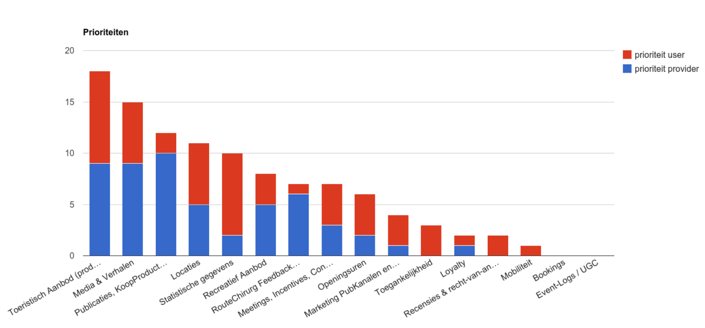
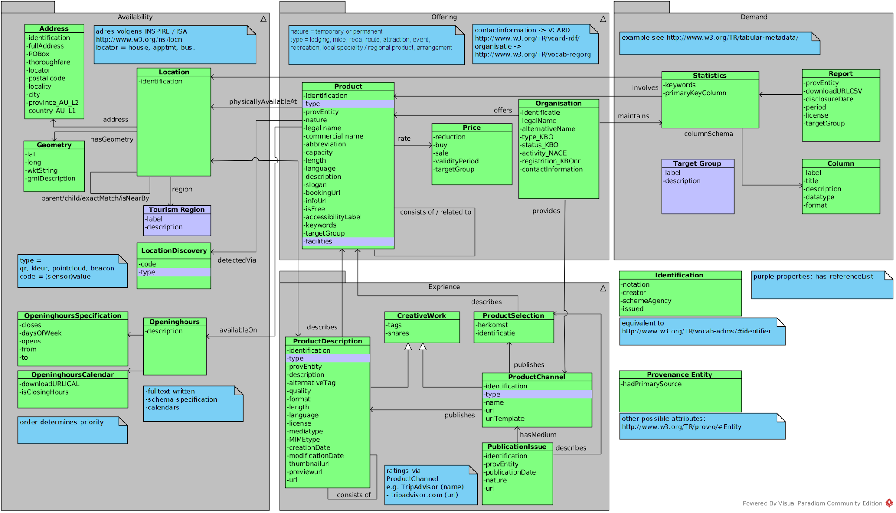

Hosted by Open Knowledge Belgium, 2014-2015. This vocabulary is published under the CC BY 4.0 license.
Abstract
This specification can and will bring a solution to one of the main issues in the field of application development for the tourism and leisure sector. A lot of projects fail because the underlying systems and databases are too difficult to connect or because it is too costly to do. This is a reason why tourism organisations are reluctant to commision new applications, and it also slows down innovation in this field.
Status of This Document
This document is merely a public working draft of a potential specification. It has
no official standing of any kind and does not represent the support or consensus of any
standards organisation.
A conformant implementation of this vocabulary MUST understand all vocabulary terms defined in this document.
3. Contributors
The project of which this specification is a result, is quite unique in that it brings together different actors both in public and private sector sector. By working together to set up the domain model, we ensure that it is shared and supported by the most important players in this sector. This bottom-up approach proves to be far more effective than a top-down one in stimulation different players to work together. This will have an impact on how tourism organisations and other players in this sector who will develop new databases, websites and mobile applications. Also, other sectors, like the heritage and museum sector, can benefit from the same approach. If they adopt the same domain model, it will be easier to exchange data between these different, but closely related, sectors.
The ‘user group’ of about 35–40 users consists of: SME’s, not-for-profit organizations involved in culture and tourism activities, representatives from the provinces and some of the major cities in the region. The fact that the user group is composed out of businesses, public administrations and not-for-profit organizations.
Name
Organization
Erik Mertz
7 Scenes
Carolien Willen
Informatie Vlaanderen
Jan Bossier
Artspot
Doenja Van Gampelaere
CIB Vlaanderen vzw
Luk Verhelst
Cultuurnet
Eric Smets
FKS
Reen Simoen
Grote Routepaden
Barbara Dierickx
PACKED vzw
Bert Lemmens
PACKED vzw
Sabine Denissen
Provincie Antwerpen
Susy Van Baelen
Provincie Antwerpen
Bram Elewaut
Provincie Oost-Vlaanderen
Eric Smets
Stad Gent
Nathalie Dumon
Stad Gent
Christophe Maes
Stad Mechelen
Jurgen Carlier
Tales
Sebastiaan Jammaers
Toerisme Limburg
Mario Stevens
Toerisme Vlaanderen
Johan Tuytte
Westtoer
Marc Portier
Westtoer
Matty Vincke
Westtoer
Michel Gilté
Westtoer
4. About
This document was originally developed under the IWT/TETRA/CORNET Project on Sustainable Mobile Tourism Guides in Flanders (‘Mobiele Toeristische Gidsen in Vlaanderen’) following the Process and Methodology for Developing Core Vocabularies.
4.1 Cause and Context
Among tourist services, operators of tourist attractions, organizers of events and the like, a growing interest in digital mobile guides to support tourists and visitors during tours and visits is to be observed. Many do already have a solution of one kind or another, but it often turns out to be solutions that are not truly sustainable. They are often indeed designed for a particular device or platform, which after a few years, gets outdated. It then occurs, that one has to start all over again if one wants another solution. Also in the underlying systems, there are issues that constitute obstacles.
If one wants to switch to another application, the system is no longer usable, the data cannot be re-used or the whole underlying system has to be rebuilt from scratch. Further, most of these systems are also not compatible with other databases despite the fact that many tourist services or related companies do have a variety of databases with information, images and the like.
The fact that one always has to start all over again, brings a high development costs along. This in turn leads to very little room for innovation. The cost for building and filling the underlying system is so high that there is not enough budget to develop innovative applications which truly meet the needs of consumers.
The IWT-CORNET project “Towards a sustainable mobile tourism guide” was set up to address this issue. The aim of the project was to provide the tourism sector in Flanders and beyond with a re-usable architecture for the exchange of tourism related data and services, upon which innovative applications can be built. As a first step, the stakeholders of the project agreed on the domain model as described in this document. This will serve as a basis to build the underlying system core to our project. Nevertheless, the domain model on its own, as described here, will be published and open sourced so that it can serve a purpose beyond the scope of this project.
4.2 Format
For each property of each entity we list the expected type, description and if available the reference to the (controlled) list of values that can be filled in or a reference with instructions on how to deal with a certain field.
Attribute/Property
Expected Type
Description
Reference
(name of the propertyy)
(type or object)
(what is the property about and how to use it)
URL
The same for the relationships, there is a table for each relationship with the name of the relationship and the target entity.
Relationship
Target Entity
(label of the relationship, the predicate)
(name of the entity)
4.3 Data and Metadata
4.3.1 Data types
Several valid datatypes can be used as property values
4.3.1.1 Text
This is a free field, everything can be stored in here, without a certain formatting. However it is possible that the values are bound by a (controlled) list.
4.3.1.2 DateTime
This type ensure a correct formatting of data and time during the exchange.
4.3.1.3 PeriodOfTime
Consists of a startdate, optional end data and/or a clue on how long a certain resource is valid.
4.3.1.4 URI
A HTTP URI, used to refer to other resources or link to web pages.
4.3.1.5 Boolean
Is either true (1) or false (0).
4.3.1.6 Number
A valid number, no alphabetic characters or non-numeric special characters allowed.
4.3.2 Metadata types
4.3.2.1 Code
In practice, each code is a separate entity with its own recurring attributes.
Attribute
Expected Type
Description
Reference
key
Text / URI
Idenitification for the code that can be reused across applications as unique identification
label
Text
What the key depicts.
description
Text
Description of what the key depicts.
source
Text / URI
Where the key originates from, organization responsible for maintaining the key
version
Text
Version of the key
4.3.2.2 Identification
The identification attribute enables the entity to be linked to related entities, while retaining information about the notation, format, author and other metadata regarding how this entity can be identified and linked to its origin. The information model simplifies this by adding a simple ‘identification’ attribute wherever needed to benefit the readability of the model.
In practice, identification is a separate entity with its own attributes.
Attribute
Expected Type
Description
Reference
notation
Text
The notation of this identifier
creator
Text
The name or description of this identifier.
schemeAgency
URI
The URI of the agency or organization responsible for this identifier.
issued
DateTime
The date this identifier was issued
5. Domain Model
5.1 Scope
The domain model as described in this document currently does not describe the entire domain of tourism and everything related to it. When defining the scope of this model, some choices needed to be made to ensure that we would be able to come up with a usable domain model that would be usable within the scope of the project we had in mind.
Hence the consortium involved in the definition of this model agreed to determine the most important parts of such a model and focus on those parts first, before further extending the model. The consortium involved consisted of research organisations, stakeholders from tourism organisations in Flanders as well as SME’s focused on delivering ICT products and services to these tourism organisations.
Fig. 1image alt text
The initial scope of this document was agreed on during a workshop session in Gent, Belgium on January 12 of 2015. Stakeholders first listed and then voted on a wide range of possible aspects of a domain model for tourism. A distinction was made based on the perceived priority of these aspects of the model for users of the data (e.g. app builders) and the perceived priority of aspects from the stance of the providers of the data. The end result of this qualitative excercise was aggregated into the figure below.

Fig. 2image alt text
Those aspects that were voted highest made the initial cut that can be found described in this document. These aspects of the domain model were further defined into the model described in this document in a series of workshops, once again involving all related stakeholders.
Related domains that did not make the initial scope are listed in section 6.2 for later reference and prioritisation.
5.2 Related domains not in scope
A number of domains can be seen as closely related to the subject of tourism, but are not included in the domain model itself. For example data pertaining to public transport, while relevant to tourism, was deemed to be a much larger thing on its own.
This section of the document can be used to list such related domains linking to existing standards for thel where available. The list below is by no means exhaustive.
We welcome further suggestions of related domains to be listed as well as attempts to link or otherwise integrate them with this domain model.

Fig. 3image alt text
Domain
Description
More information
Public Transport
Everything pertaining to public transport
To be completed
Pricing
Everything that extends our basic model of product pricing
Everything pertaining to labels or licenses with regards to touristical products, organisations and other objects
To be completed
6. Offering
6.1 Product
The offering of organisations within the broader tourism sector aimed at the tourist as the consumer of said offering.
The product is described as objective as possible in this entity, leaving more elaborate description to be provided as part of the productDescription entity.
Products can be related to each other in a sibling or hierarchical relationship, enabling groups of similar products or products acting as a container for one or more sub-products.
Multiple product types extend the basic description of a product, optionally adding their own specific attributes to the description of a touristic product. These product types are described in the sub-sections following the general description of the Product entity.
Attribute
Expected Type
Description
Reference
identification
Identification
A unique identifier for the product. The format follows the identification format as described in the metadata type description in section 1 of this document.
category
skos:Concept (List)
The reference code(s) that link(s) to a categorisation of the product. The referenced list is specific for each product type. These reference lists are listed in section 3.2.
See section 3.2.
provEntity
Provenance Entity
A unique identifier linking this entity to the Provenance Entity, which describes the originating source of this record and a historical overview of actions taken with regards to this product.
nature
skos:Concept (List)
Whether the product is temporary or permanent in nature.
The legal name of the product, not necessarily being the named used in marketing the product towards the consumer.
commercial name
Text
The commercial name of the product targeted towards the consumer.
abbreviation
Text
An abbreviation of the product name
capacity
Number
The number of consumers (people) this product can accept at any one time.
e.g. if it is lodging, the capacity is the sum of the official maximum capacity of all the rooms together.
length
Text
Description on how long the product takes or lasts, if relevant. This can be added as free text.
language
Code (list)
list of ISO 639–1 2-letter codes of the language(s) this product is available in.
The reference code(s) that link(s) to a description of the facilities available to consumers. This is linked to the product rather than the venue as availability of these facilities may vary depending on the product.
Various touristic products differ in nature and have the need to be described using a specific set of fields. Product Types extend the generic Product entity. The following product types have been identified (The category reference list to be used for each type is indicated in the second column) :
What period or time of the year this arrangement is available at or focused towards. A textual description that can complement a more structured listing of opening hours. E.g. “Available throughout the summer” or “Weekends only”
numberOfPeople
Number
The amount of people that can participate in the arrangement when a single such arrangement is booked.
6.1.2 Attraction
A place, product, installation or facility that offers an appeal or function to tourists in an indoor or outdoor location.
Attribute
Expected Type
Description
Reference
6.1.3 Event
A touristic product taking place at a specific and limited time, usually with a limited capacity.
Attribute
Expected Type
Description
Reference
6.1.4 Lodging
Touristic products that offer sleeping and related facilities.
A route is a trajectory a tourist can follow as a touristical experience. Routes have specific recreationTypes, describing the mode of transport suggested or required for the route (e.g. walking, biking, …).
Routes can either be spatially described using geometry (called a “GemoetryBasedRoute”) or as a network of nodes that should be navigated in a suggested order.
Routes can be equipped with signage, assisting the tourist in navigating the route, using one or more related and visible or otherwise detectable markings.
Attribute
Expected Type
Description
Reference
openedDate
Date
The day the route was opened for use.
Relationship
Target Entity
Comment
contactPoint
Organization
Which organisation can be contacted for more information or questions, with regards to the Route
maintainedBy
Organization
Which organisation is responsible for the maintenance of the Route
GeometryBasedRoute
A route described using a geometric form.
Attribute
Expected Type
Description
Reference
length
Number
The total length of the route in meters
Relationship
Target Entity
Comment
trajectory
Geometry
A geometric form spanning the route
EntryPoint
Describes the entry location(s) of a ThemedRoute
Attribute
Expected Type
Description
Reference
name
text
Name of the entry location
Relationship
Target Entity
Comments
belongsTo
ThemedRoute
Assigns a location as a possible entry point for
location
Location
NetworkBasedRoute
A description of a route based on a network of NetworkElements
Attribute
Expected Type
Description
Reference
length
number
The total length of the route in meters
isClosedLoop
boolean
determines whether a route is circular (ends where it starts) or not (thus linear)
isBothWays
boolean
indicates whether a route can be followed both ways (start to end and vise versa).
Relationship
Target Entity
Cardinality
Comments
trajectoryDescription (list)
NetworkElement
2..n
The sequence of NetworkElements determines the trajectory.
Network
A Network is a set of NetworkElements (e.g. Knooppuntennetwerk)
Attribute
Expected Type
Description
Reference
Relationship
Target Entity
belongsTo
NetworkGroup
NetworkGroup
A group of Networks
Attribute
Expected Type
Description
Reference
Type
Code
The reference code(s) that link(s) to a description of the type of network group.
The bearing, in degrees towards the North, the front of the sign should face. E.g. 90° = East, 315° = North-West
trajectoryDirection
Text
The direction in the trajectory of the Route the arrow points in.
Sticker
A sticker, indicating the direction in a route.
PaintMarker
A painted indication of the direction in a route.
6.1.9 Factoid
Interesting facts or events that occurred on a certain place, but not physically present anymore, but interesting to know for people visiting this location.
6.2 Organisation
An organisation offering one or more products or services related to the Tourism industry. These could be organisations that offer or organise Products, but plenty of other entities within the model refer to the Organisation entity to describe responsability, contact details or more.
Attribute
Expected Type
Description
Reference
identification
Identification
A unique identifier for the Organisation.
legalName
Text
The legal name of the organisation
alternativeName
Text
An alternative name for the organisation
preferredName
Text
The name preferred for use when displaying the organisation’s name to application users. This can be the value of legalName or alternativeName
type_KBO
Code
(V)KBO
status_KBO
Code
(V)KBO
activity_NACE
Code
Nace
registration_KBOnr
Text
contactInformation
URI
uri of where the vcard can be found (either as vcf or rdf)
Relationship
Target Entity
offers
Product
maintains
Statistics
provides
ProductChannel
6.3 Price
The price of a product or related entity.
Attribute
Expected Type
Description
Reference
reduction
text or URI
In case of elaborate reduction schemes, a description or a URI pointing to more information
currency
Text
The currency in which the price is expressed. Described in ISO 4217.
The buying price. The price the organisation offering the product paid.
sell
Text
The selling price. This is the consumer price.
validityPeriod
Text
A description of when this price is valid.
targetGroup
Code (List)
Reference to the target group for this Price
7. Experience
7.1 ProductDescription
A product description describes a touristic product in a way so that the description fits a specific target group, end-user context and medium. Multiple ProductDescription entities can refer to the same Product. Descriptions can be multimedial and used on their own or in combination with other descriptions of the same product, when combined in a ProductSelection entity.
Attribute
Expected Type
Description
Reference
identification
Identification
A unique identifier for the product description. The format follows the identification format as described in the metadata type description in section 1 of this document.
Type
Code
The reference code that links to a categorisation of the product description.
A unique identifier linking this entity to the provenance Entity, which describes the originating source of this record.
description
Text
Describes this product description objectively towards users of the description (not tourists)
quality
Text
Describes the of
Relationship
Target Entity
Describes
Product
related to
Location
consists of
Product
7.2 CreativeWork
Creative Work generalises a ProductDescription or ProductChannel describing tags and social media shares.
Attribute
Expected Type
Description
Reference
hasTag
Text (List)
Tags describing the entity
shares
text (List)
A a list of URLs on social media listing posts that share/cite this creativework?
7.3 ProductChannel
A Channel publishes one or more ProductDescriptions.
Attribute
Expected Type
Description
Reference
identification
Identification
A unique identifier for the Channel. The format follows the identification format as described in the metadata type description in section 1 of this document.
type
Code (List)
The reference code that links to a categorisation of the product description.
“the (optional) uri-template that generates the webreferences to the products published inside this channel, by filling in the named propery-values of the actual products” – the names to use are the attribute-names of the “product” entity in this specification. This allows endusers to predict the deep-link-url inside the publication channel to each specific product.
The link between a channel and a product. Describes which Products are related to the channel describing the Product.
Attribute
Expected Type
Description
Reference
identification
Identification
A unique identifier for the Product Selection. The format follows the identification format as described in the metadata type description in section 1 of this document.
origin
provenanceEntity
Describes which provenanceEntity provided the selection
Relationship
Target Entity
describes
Product
7.5 PublicationIssue
Describes a specific issue of a product channel (e.g. Magasine issue)
Attribute
Expected Type
Description
Reference
identification
Identification
A unique identifier for the PublicationIssue. The format follows the identification format as described in the metadata type description in section 1 of this document.
provEntity
Provenance Entity
A unique identifier linking this entity to the Provenance Entity, which describes the originating source of this record and a historical overview of actions taken with regards to it.
publicationDate
Date
The date of publication for this PublicationIssue
nature
Text
A free description of the nature of this PublicationIssue
url
text
The URL of the PublicationIssue
Relationship
Target Entity
hasMedium
ProductChannel
describes
ProductSelection
8. Availability
8.1 Location
A location describes the physical location at which products or related entities from this model can be found at. A Location can have an Address and a Geometry describing it. A Location can be part of a region but also be related to other Locations: being a parent of one, a child of one, a match of one or being near to one.
Attribute
Expected Type
Description
Reference
identification
Identification
A unique identifier for the Location. The format follows the identification format as described in the metadata type description in section 1 of this document.
Relationship
Target Entity
hasAddress
Address
hasGeometry
Geometry
hasRegion
Region
isParentOf
Location
isChildOf
Location
isExactMatchOf
Location
isNearby
Location
8.2 Tourism Region
Tourism Regions are geographical regions specifically named and designated for tourism purposes. They may be differently named than the exact geographical region names of an area. The idea here is that each area often comes up with its own naming of geographical areas in terms of tourism. This entity allows such naming.
Attribute
Expected Type
Description
Reference
label
Code (List)
The reference code that links to a standardised label naming of the region.
Describes a Location using a geometric shape positioned on a specific location. Apart from coordinates, the model allows for both WKT (Well known text) as GML (Geography Markup Language) to be used to describe the Geometry.
Attribute
Expected Type
Description
Reference
lat
Text
the latitude of a geometry
long
Text
the longitude of a geometry
wktString
Text
The WKT (well known text) string notation of the Geometry
A unique identifier for the Address. The format follows the identification format as described in the metadata type description in section 1 of this document.
fullAddress
Text
Describes the full address following an INSPIRE/ISA notation
The name of the province
(INSPIRE Administrative Unit Level 2)
country_AU_L1
Text
The name of the country
(INSPIRE Administrative Unit Level 1)
8.5 Location Discovery
LocationDiscovery entries make it possible to indicate how a Product is made discoverable for technologies by using QR, NFC or RFID tags for example. This entity allows the type of discovery technology to scale as new technologies emerge.
Attribute
Expected Type
Description
Reference
code
Text
the unique identifier of the LocationDiscover entry
type
Code
The reference code that links to a standardised description of the type of location discovery technology.
Describes the opening hours during which a product is accessible or able to be experienced by tourists. A simple description offers a non-structured way to describe this, while a more structured way to offer the data is made available via OpeninghourSpecifications and OpeninghourCalendar entities.
Attribute
Expected Type
Description
Reference
description
Text
A textual description of the opening hours. This can be structured in any way.
Relationship
Target Entity
specifiedBy
OpeninghourSpecifications
calendar
OpeninghourCalendar
8.6.1 Opening Hours Specification
A structured description of opening hours following the schema.org openinghours specification.
Attribute
Expected Type
Description
Reference
closes
Time
Describes when the Product is closed
dayOfWeek
DayOfWeek
Describes the day of the week the opening hours for this Product are valid.
opens
Time
Describes when the Product is opened
validFrom
DateTime
Describes starting when this entry is valid
validThrough
DateTime
Describes until when this entry is valid
requiresAppointment
Boolean
Set to TRUE if an appointment is needed for these opening hours. Set to FALSE if an appointment is not needed. If not included, FALSE is assumed.
8.6.2 Opening Hours Calendar
Link to a calendar file describing the opening or closing hours of a Product
Attribute
Expected Type
Description
Reference
downloadURLICAL
Text
The download location of the ICAL file describing the calendar
isClosingHours
Boolean
Indicates whether or not the calendar is a description of the closing times rather than the opening times of a Product. If isClosingHours is not included, then it is assumed to be false.
9. Demand
9.1 Statistics
Describes any statistics relevant to the tourism sector. Can be related to a specific Product. Statistics are described by linking to one or more Columns, whereas Reports refer to Statistics to pinpoint specific files or resources offering these Statistics.
Attribute
Expected Type
Description
Reference
keywords
Text (List)
A list of keywords describing the Statistic
primaryKeyColumn
Text
The name of the Column which acts as the primary key for this Statistic
Relationship
Target Entity
Involves
Product
Has
Column
Has
Location
9.2 Column
Describes a single Column of a Statistic.
Attribute
Expected Type
Description
Reference
label
Text
Labels the column’s header
title
Text
A title for the column
description
Text
A description for the column’s content
datatype
Text
The specific datatype the column’s data should be in
format
Text
The specific format the column’s data should be in
9.3 Report
Points to a specific report of a Statistic.
Attribute
Expected Type
Description
Reference
provEntity
ProvenanceEntity
A unique identifier linking this entity to the Provenance Entity, which describes the originating source of this record and a historical overview of actions taken with regards to this product.
downloadURLCSV
Text
The URL of the direct download location of the Report’s CSV file
The mapping guidelines below do not aim to redesign or remodel existing IT infrastructure of related data sources, but is intended to form an exchange layer between the various systems. It is a technology neutral specification, this means there is a decoupling of the implementation and the description. In this project meaningful processing of received tourism related data is key for developing smart mobile guides. The serialization ensures a correct representation of the data so it can be reused and interpreted by applications as expected.
The serialization is expressed in RDF. An RDF serialization makes optimal use of existing schemas and vocabularies. This is important so that applications and other RDF derived serializations can be linked maximally to the RDF serialization in this project without complex mapping modules. Furthermore it will guarantee the reuse of existing schemas that model the same or related domains. An additional advantage is that the set of new definitions needed to be introduced remains as limited as possible.
10.1 Namespaces
The recommended namespace for this vocabulary is
http://w3id.org/ost/ns#
and the recommended prefix to be used with it is ost
This vocabulary also references other vocabularies, as listed in the table below
Namespace
Prefix
Managed By
Domain
http://www.w3.org/ns/org#
org
W3C GLD
Organisations
http://www.w3.org/ns/regorg#
regorg
W3C GLD
Registered Organisations
http://www.w3.org/ns/person#
person
ISA
Persons
http://www.w3.org/ns/locn#
locn
ISA
Locations
http://purl.org/dc/terms/
dcterms
DCMA
Metadata
http://schema.org/
schema
schema.org
Markup, Metadata
http://www.w3.org/2006/vcard/ns#
vcard
W3C
Contact Information
http://www.w3.org/ns/adms#
adms
WRC GLD
Standards, Codelists, Asset Descriptions
http://semweb.mmlab.be/ns/oh#
oh
OpeningHours.io
Opening Hours, Calendars
http://www.w3.org/2006/time#
time
W3C
Time
http://www.w3.org/ns/prov#
prov
W3C
Provenance
http://www.w3.org/ns/csvw#
csvw
W3C
Statistical Schemas and Tabular Metadata
http://purl.org/goodrelations/v1#
gr
GoodRelations
Commercial Goods and Offerings
http://purl.org/muto/core#
muto
MUTO
Tags
http://purl.org/acco/ns#
acco
Hepp Research GmbH
Accommodation
10.2 Mappings
We make a distinction between classes and properties. For the classes there is a distinction between primary and secondary classes. Primary classes are the objects that are exchanged as a whole and can have properties. All primary objects must have an identifier. Secondary objects are objects which can be linked to primary objects and they enrich the primary objects. Literal properties should be annotated with their datatype (using XSD base types: string, date, dateTime, integer, float).
Fully represented by the W3C Location vocabulary. Use the description of http://www.w3.org/ns/locn but where Location itself is used as RDF Resource to refer to Geometry and Address.
Location introduces some extra properties not included in the original vocabulary.